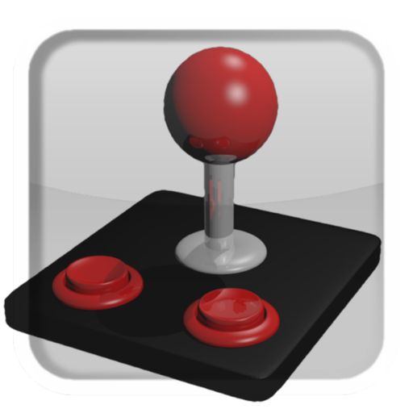

USB BT Joystick Center
6
USB BT Joystick Center
for use with
USB BT Joystick Center
and
Joy2Touch Server
.
Edition 1

poke
64738
Lead Developer
poke64738@gmail.com
Jared
Morgan
Volunteer Technical Writer
jaredleonmorgan@gmail.com
Abstract
This guide will help you initially set up USB BT Joystick Center and Joy2Touch Server on your Android device. After initially setting up the product, further instructions about configuring both products are discussed in detail.
1. Introduction
2. Main Screen
3. Connect a Controller
A. Revision History
Chapter 1. Introduction
Thank you for downloading USB/BT Joystick Centre.
Chapter 2. Main Screen
When you start the application for the first time, the main screen is displayed.
Chapter 3. Connect a Controller
Procedure 3.1. Configuring Input Methods
Before using USB BT Joystick Center to control an application for the first time, you need to authorize the application as a valid input method (IME).
Follow these steps to authorize USB BT Joystick Center as an input method on the device.
Tap the
IME
slider to open the Android Language and Input settings.
In the Keyboard & Input Methods group, tap the USBJoyIME checkbox.
In the Attention dialog box, read and accept the warning and tap
OK
.
Exit the Android Language and Input settings screen.
USB BT Joystick Center is now configured as an IME
Procedure 3.2. Select Input Method
Tap the
IME
Button to open the Input Method menu.
Select USBJoyIME to set USB BT Joystick Center as the input method, until the application is closed.
Note
Once this setting is activated, you will not be able to use other input methods, such as on-screen keyboards.
Procedure 3.3. Connect USB Device
Follow this procedure to connect a USB device and detect it using USB BT Joystick Center
Plug the cable into the device.
Tap SEARCH to detect the device.
The controller is detected, and it's name is displayed as a button in the main screen.
Procedure 3.4. Connect Bluetooth Device
Follow this procedure to pair and detect a Bluetooth controller with USB BT Joystick Center.
Tap the
BT
slider to turn on Bluetooth.
Tap
Yes
on the Bluetooth permission request menu to activate Bluetooth on the device.
On the controller, activate Bluetooth pairing mode.
On the device, tap SEARCH.
The controller is detected, and it's name is displayed as a button in the main screen.
Revision History
Revision History
Revision 6.1-1
Mon Nov 5 2012
Jared
Morgan.
First Draft for community review.